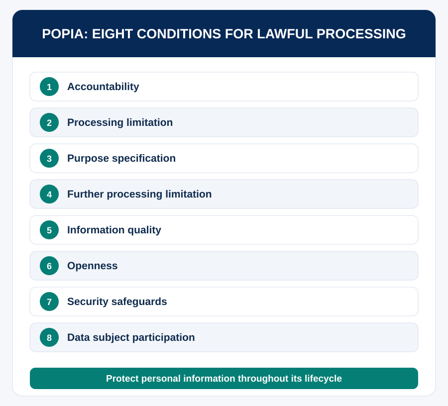

Purpose of the Session
Equip yourself with foundational knowledge of South African workplace policies, the Protection of Personal Information Act (POPIA), and the legal framework governing employee rights and responsibilities. Learn how personal information should be handled, identify workplace rights and obligations, and respond appropriately to confidentiality, unfair treatment and misconduct situations.
Learning Outcomes
- Explain the purpose of POPIA and identify examples of personal information.
- Apply basic privacy and confidentiality principles to workplace scenarios.
- Identify key South African labour laws and their relevance to interns and employees.
- Recognise rights relating to employment conditions, fair labour practices, equality and representation.
- Identify appropriate reporting and assistance channels.
- Make responsible decisions in ethical and policy-related dilemmas.
Time allocation: 1 hour
An intern receives a spreadsheet with employees’ names, phone numbers, ID numbers and salary details. A colleague asks the intern to send it to a personal email address to work from home.
Would you send it? Does access mean permission to share? What might happen after an unauthorised disclosure?
Understanding POPIA
The Protection of Personal Information Act 4 of 2013 (POPIA) protects personal information processed by public and private bodies. It establishes conditions for lawful processing and safeguards individuals against misuse.
Personal information can include names, identity numbers, contact details, employment records, salaries, performance evaluations, identifiable photographs, recordings, online information and sensitive health information.
Watch the POPIA introduction video ↗
The eight conditions for lawful processing

- Accountability: The responsible party must ensure compliance.
- Processing limitation: Process information lawfully and reasonably.
- Purpose specification: Collect for a specific, defined and lawful purpose.
- Further processing limitation: Subsequent use must be compatible with the original purpose, subject to the Act.
- Information quality: Take reasonable steps to maintain accuracy.
- Openness: Provide appropriate information about collection and processing.
- Security safeguards: Use reasonable technical and organisational protections.
- Data subject participation: Respect applicable access, correction and related rights.
What does POPIA mean for interns?
Interns may handle attendance registers, application forms, participant lists, recordings, employee records and research data. Access only what is necessary; use approved storage; share only with authorised recipients; avoid unnecessary copies; report suspected breaches; and follow retention and disposal requirements.
Remember: Consent is not the only lawful justification for processing personal information.
The Privacy Detective
Complete this activity in the interactive learning experience.
Open Interactive Activity →Understanding the South African Labour Framework
Workplace policies should be understood alongside applicable legislation:
- Constitution of the Republic of South Africa, 1996: Section 23 recognises fair labour practices and labour-related protections.
- Basic Conditions of Employment Act 75 of 1997 (BCEA): Establishes basic conditions including working hours, leave, remuneration and termination, subject to applicable legal provisions.
- Labour Relations Act 66 of 1995 (LRA): Regulates labour relations, collective bargaining, organisational rights and dispute-resolution mechanisms.
- Employment Equity Act 55 of 1998 (EEA), as amended: Addresses employment equity and unfair discrimination under its applicable provisions.
- POPIA: Governs lawful processing and protection of personal information.
What are workplace policies?
Policies translate legal duties and organisational values into practical rules. Common topics include hours and attendance, conduct, discrimination and grievances, confidentiality, disciplinary procedures, safety, communication and acceptable technology use. A policy cannot lawfully remove statutory rights.
Employee Rights, Responsibilities and Support
Rights and protections
- Fair labour practices and applicable statutory employment conditions.
- Protection against unfair discrimination.
- Appropriate procedures for workplace grievances.
- Lawful labour representation and participation.
- Workplace health and safety protections.
Responsibilities
- Follow lawful and reasonable instructions.
- Meet agreed duties and deadlines.
- Respect colleagues and confidentiality.
- Follow workplace and safety procedures.
- Report misconduct, risks or breaches through appropriate channels.
Where can employees seek assistance?
Depending on the issue, speak to a supervisor, human resources, a grievance or ethics channel, a recognised trade union, the Department of Employment and Labour, or the CCMA. Use appropriate internal processes and seek independent advice when necessary. Serious concerns should not be ignored because someone is an intern.
Know Your Workplace Rights
Complete this activity in the interactive learning experience.
Open Interactive Activity →Checklist and Reflection
Checklist
ePortfolio Reflection
ePortfolio Reflection
Complete this activity in the interactive learning experience.
Open Interactive Activity →Recommended and Additional Reading
Continue to Occupational Health and Safety.